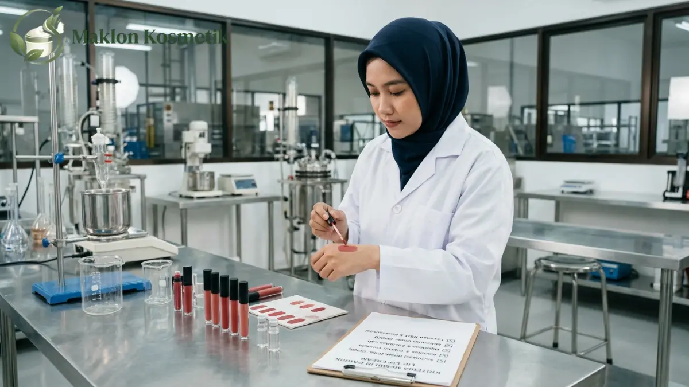

Daftar Pabrik Maklon Lip Cream MOQ 100 Pcs Terbaik di Indonesia

Daftar Isi Artikel Buka/Tutup
- Apa Itu Maklon Lip Cream dan Arti MOQ 100 Pcs?
- Pertumbuhan Industri Kosmetik di Indonesia
- Daftar Tipe Pabrik Maklon Lip Cream MOQ 100 Pcs
- Mengapa Nama Pabrik Tidak Disebut Spesifik?
- Kriteria Pabrik Maklon Lip Cream Terbaik
- Cara Kerja Maklon Lip Cream dari Brief ke Produk Jadi
- Biaya dan Faktor Penentu Harga Maklon MOQ Kecil
- Formula Stock vs Formula Custom untuk Lip Cream
- Dokumen dan Legalitas Wajib Sebelum Memesan
- Kesalahan Umum Memilih Pabrik Maklon MOQ 100 Pcs
- Tips Negosiasi dan Produksi Pertama
- Perbedaan MOQ 100 Pcs dengan MOQ Besar
- Pertanyaan Umum (FAQ)
Ringkasan Poin Inti
- Pabrik maklon lip cream MOQ 100 pcs menerima pesanan skala kecil memakai formula dan kemasan stok siap pakai.
- Skema MOQ rendah ditawarkan manufaktur skala UMKM untuk mempermudah brand baru menguji minat pasar.
- Mitra yang layak dipilih wajib mengantongi izin resmi CPKB, notifikasi BPOM, dan transparansi rincian biaya.
- Harga per unit pada pesanan 100 pcs lebih tinggi karena beban biaya persiapan mesin ditanggung jumlah unit sedikit.
- Selalu verifikasi legalitas pabrik melalui database BPOM sebelum mentransfer uang muka produksi.
Apa Itu Maklon Lip Cream dan Apa Arti MOQ 100 Pcs?
Maklon lip cream adalah jasa manufaktur kosmetik dekoratif bibir yang dilakukan oleh pabrik berizin untuk merek dagang milik pihak lain. Pemilik merek dapat berfokus penuh pada identitas brand, pemasaran digital, dan strategi penjualan.
Pihak pabrik bertanggung jawab menangani riset formulasi, pengadaan bahan baku aman, proses pencampuran, pengisian ke botol aplikator, hingga pengawasan mutu standar laboratorium.
Istilah MOQ merupakan singkatan dari Minimum Order Quantity. MOQ 100 pcs berarti ambang batas pesanan paling sedikit yang dapat diproses oleh pabrik adalah 100 botol per batch produksi.
Batas order 100 unit tergolong sangat kecil bagi industri kosmetik. Skema ini sangat menguntungkan pebisnis pemula untuk validasi respon pasar tanpa risiko menimbun stok ribuan produk.
Seberapa Besar Industri Kosmetik di Indonesia yang Mendukung Layanan Maklon?
Industri kecantikan di Indonesia terus mencatatkan pertumbuhan signifikan setiap tahun. Berdasarkan catatan Kementerian Perindustrian, terdapat ratusan pabrik kosmetik berizin yang beroperasi aktif di seluruh Indonesia.
Sebagian besar pelaku industri manufaktur kosmetik tersebut berskala kecil dan menengah. Mereka membuka pintu kemitraan fleksibel bagi para pemilik brand independen melalui sistem maklon privat.
Persaingan antarpabrik mendorong tersedianya paket produksi ber-MOQ rendah. Namun, pemilik brand tetap dituntut cermat memilah pabrik yang benar-benar menerapkan standar Cara Pembuatan Kosmetik yang Baik (CPKB).
Bagaimana Daftar Tipe Pabrik Maklon Lip Cream MOQ 100 Pcs di Indonesia?
Untuk mempermudah penelusuran mitra produksi, pabrik maklon lip cream dengan syarat order minimal kecil di Indonesia dapat diklasifikasikan ke dalam lima kategori operasional berikut:
1. Pabrik Skala UMKM dengan Formula Stock
Kategori ini merupakan opsi paling realistis untuk pemesanan 100 unit. Pabrik telah menyiapkan formula dasar lip cream matte atau velvet yang stabil, sehingga Anda tinggal menentukan pilihan warna label.
2. Pabrik Menengah dengan Paket Inkubasi Brand Baru
Pabrik menengah kerap membuka lini khusus starter pack bagi pengusaha pemula. Mereka menawarkan fasilitas uji coba dengan batas kuantitas awal yang jauh lebih ramah dibanding lini reguler.
3. Penyedia Formula Stock & Kemasan Siap Pakai
Fasilitas ini fokus mengombinasikan formula jadi dengan aneka pilihan botol aplikator stok gudang. Proses peluncuran menjadi sangat cepat, meski kebebasan modifikasi bahan aktif relatif terbatas.
4. Perantara atau Agen Konsultasi Maklon
Agen bertindak menghubungkan pemilik brand dengan jaringan pabrik manufaktur rekanan. Layanan pendampingannya memudahkan pemula, namun Anda wajib memverifikasi nama pabrik produsen yang sebenarnya.
5. Pabrik Skala Besar Lini Produksi Massal
Pabrik multinasional umumnya mematok MOQ mulai 3.000 hingga 10.000 unit. Tipe ini cocok dituju ketika penjualan produk lip cream Anda sudah stabil dan membutuhkan efisiensi harga bahan massal.
Mengapa Nama Pabrik Tidak Disebut Satu per Satu?
Kebijakan MOQ, kesiapan lini mesin, dan skema harga pabrik kosmetik dapat berubah sewaktu-waktu tergantung kapasitas utilitas pabrik dan ketersediaan bahan impor.
Menyebutkan daftar nama merek pabrik tanpa pengujian langsung berisiko memberikan informasi usang bagi pembaca. Pabrik yang menerima 100 pcs bulan ini bisa saja menaikkan batas pesanan pada bulan depan.
Langkah yang jauh lebih objektif adalah mengumpulkan 3 hingga 5 kandidat pabrik dari kategori di atas, kemudian menguji integritasnya memakai parameter mutu yang teruji.
Apa Saja Kriteria Pabrik Maklon Lip Cream Terbaik?
Memilih rekanan produksi bukan sekadar mencari penawaran harga paling miring. Parameter mutu, integritas perizinan, dan transparansi kontrak adalah pilar utama keamanan bisnis Anda:
- Sertifikasi CPKB Resmi: Pastikan ruang lingkup sertifikat CPKB mencakup sediaan kosmetik rias bibir, bukan hanya sabun atau losion.
- Fasilitas Registrasi BPOM: Pabrik memiliki rekam jejak pengurusan notifikasi resmi yang tercatat rapi di portal Badan POM.
- Transparansi Bahan Baku: Formulator bersedia membeberkan daftar bahan pewarna, emollient, dan pengawet yang aman bersentuhan dengan bibir.
- Ketersediaan Sampel R&D: Pabrik memberikan sampel fisik untuk Anda uji performa warnanya, rasa di bibir, dan daya tahannya terhadap oksidasi.
- Kejelasan Kontrak Kerja: Syarat penggantian produk cacat atau tabung bocor tercantum gamblang sebelum pembayaran komitmen awal.

Bagaimana Cara Kerja Maklon Lip Cream dari Brief sampai Produk Jadi?
Alur kerja sama maklon kosmetik berjalan secara terstruktur dalam beberapa langkah berkesinambungan demi menjamin kesesuaian formula dengan ekspektasi merek:
Tahap 1 - Brief Produk: Tentukan konsep lip cream, hasil akhir (matte, satin, atau glossy), target aroma, dan segmentasi harga jual konsumen.
Tahap 2 - Seleksi Formula: Pada paket MOQ 100 unit, Anda memilih formula basis stock yang sudah melewati uji kestabilan pabrik.
Tahap 3 - Pengujian Sampel: Uji tekstur dan ketahanan warna sampel pada berbagai kondisi suhu sebelum memberikan tanda tangan persetujuan.
Tahap 4 - Kontrak & Notifikasi BPOM: Pembuatan surat perjanjian resmi, pembayaran uang muka, serta pengajuan berkas legalitas izin edar.
Tahap 5 - Batch Manufaktur & QC: Pencampuran bahan di mesin homogenizer, pengisian ke dalam tabung aplikator, dan pemeriksaan lolos uji laboratorium.
Tahap 6 - Pengemasan Akhir: Penempelan label merek, segel keamanan botol, boks pelindung, dan pengiriman aman ke gudang Anda.
"Kunci sukses bisnis kosmetik private label bukan pada modal awal yang fantastis, melainkan kecermatan memverifikasi sertifikasi CPKB dan legalitas formula sebelum memulai produksi."
Berapa Biaya dan Faktor yang Memengaruhi Harga Maklon Lip Cream MOQ Kecil?
Biaya produksi lip cream dengan pesanan minimal 100 unit sangat dipengaruhi oleh sejumlah variabel teknis. Harga per pcs pada order 100 unit hampir selalu lebih tinggi ketimbang order 5.000 unit.
Penyebab utamanya adalah biaya tetap operasional, seperti pembersihan mesin blending, kalibrasi nozzle pengisian, dan administrasi mutu, dibagi ke dalam volume unit yang sedikit.
Faktor penentu biaya meliputi kualitas pigmen pewarna bibir, bahan pelembap tambahan seperti vitamin E atau jojoba oil, serta jenis tabung aplikator yang Anda pilih.
Apa Perbedaan Maklon Formula Stock dan Formula Custom untuk Lip Cream?
Memahami perbedaan kedua skema formula sangat menentukan efisiensi modal dan kecepatan penetrasi pasar brand Anda:
| Aspek Pembanding | Formula Stock | Formula Custom |
|---|---|---|
| Batas Minimum (MOQ) | Sangat rendah, mulai 100 pcs | Umumnya tinggi, 1.000 - 5.000 pcs |
| Durasi Pengembangan | Cepat, formula sudah siap | Lama, membutuhkan uji stabilitas lab |
| Biaya Awal Riset | Nol atau sangat terjangkau | Ada biaya trial dan formula R&D |
| Diferensiasi Produk | Karakteristik standar pabrik | Eksklusif dan unik milik brand Anda |
| Fleksibilitas Bahan | Terbatas pada katalog opsi | Bebas merancang klaim bahan aktif |
Untuk tahap validasi pasar perdana, formula stock adalah solusi paling ekonomis dan rasional sebelum Anda beralih ke formula custom di batch berikutnya.
Dokumen dan Legalitas Apa yang Harus Dicek Sebelum Memesan?
Keabsahan hukum adalah perlindungan nomor satu bagi brand kecantikan Anda. Mintalah salinan Nomor Induk Berusaha (NIB) dan sertifikat izin edar sebelum menandatangani SPK.
Pastikan pihak mana yang tercatat sebagai pemohon notifikasi BPOM. Jika notifikasi diterbitkan atas nama merek Anda, maka nomor registrasi tersebut tetap menjadi aset Anda bila di kemudian hari berpindah pabrik.
Apa Kesalahan Umum Saat Memilih Pabrik Maklon MOQ 100 Pcs?
Banyak pemula terjebak tawaran harga yang terlalu murah tanpa memeriksa rekam jejak pabrik. Akibatnya, produk mudah menggumpal, pecah minyak, atau izin edarnya bermasalah.
Kesalahan fatal lainnya adalah menyetujui produksi tanpa menguji sampel di berbagai kondisi cuaca, serta berasumsi biaya paket sudah mencakup ongkos cetak boks luar.
Bagaimana Tips Negosiasi dan Menjalankan Produksi Pertama?
Bawalah brief tertulis yang rinci saat berkonsultasi agar perhitungan tim formulator akurat. Tanyakan peluang penurunan harga per pcs jika Anda melakukan re-order dalam tempo tiga bulan.
Gunakan 100 unit pertama untuk dibagikan kepada influencer mikro dan konsumen loyal, catat ulasan teksturnya, lalu gunakan masukan tersebut untuk menyempurnakan batch kedua.
Apa Bedanya MOQ 100 Pcs dengan MOQ yang Lebih Besar?
Setiap tingkatan jumlah pesanan memiliki karakteristik biaya dan profil risiko yang berbeda:
| Parameter | Skema MOQ 100 Pcs | Skema MOQ Besar (>1.000 Pcs) |
|---|---|---|
| Kebutuhan Modal | Ringan, cocok bagi perorangan | Membutuhkan alokasi modal besar |
| Harga Pokok per Pcs | Lebih tinggi karena volume sedikit | Jauh lebih murah dan kompetitif |
| Risiko Stok Mengendap | Sangat rendah dan cepat habis | Perlu strategi distribusi terencana |
| Kustomisasi Kemasan | Botol stok bawaan pabrik | Bisa custom warna, bentuk, & sablon |
| Target Pengguna | Uji kelayakan pasar & brand baru | Brand yang telah memiliki pasar luas |
Memulai dari MOQ kecil adalah langkah paling bijak untuk belajar memahami dinamika pasar kosmetik secara langsung tanpa tekanan finansial yang berat.
Ingin Konsultasi Maklon Lip Cream MOQ Fleksibel?
Wujudkan produk lip cream impian merek Anda bersama formulator berpengalaman Maklon Kosmetik ID. Dukungan perizinan BPOM lengkap dan legalitas terjamin.
Pertanyaan Umum (FAQ)
.webp)
Mega (Ega)
Praktisi & Konsultan Formulasi Kosmetik di Maklon Kosmetik ID. Berpengalaman mendampingi ratusan brand owner merintis produk kecantikan berstandar BPOM & Halal.